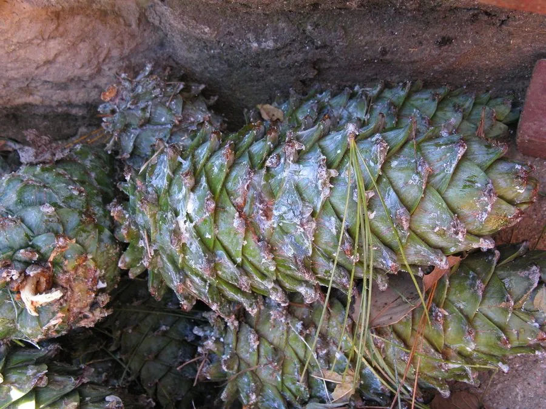

乔木 · 植物界
华山松 Pinus armandii

中国特有的高山松树，针叶五针一束，球果大而下垂，木材与松子兼用，常成片生长于中高山林地，树姿挺拔。
- 分类
- 门裸子植物门纲松柏纲目松柏目科松科属松属
- 栖息环境
- 海拔 1000–3300 米的中高山地带，喜光耐寒，喜湿润肥沃土壤
- 地理分布
- 中国陕西、山西、甘肃、四川、云南、贵州、湖北等地，为中国特有树种
- 保护级别
- 暂无评估；中国未列入国家重点保护野生植物名录
物种志
华山松为常绿针叶乔木，高可达 35 m，树皮灰绿色、平滑，老树呈块片状开裂；针叶 5 针一束，长 8–15 cm，细软下垂，叶鞘早落。雌雄同株，雄球花黄色、簇生于新枝下部，雌球花紫红色、生于枝顶；球果圆锥状长卵形，长 10–20 cm，成熟时黄褐色，鳞片开裂散出无翅种子。
华山松分布于中国陕西、山西、甘肃、四川、云南、贵州、湖北等地的中高山地带，是华山、秦岭等地的标志性松树之一，喜光、耐寒，适宜深厚肥沃、排水良好的山地棕壤，常与栎类、桦木构成混交林。木材轻软、纹理通直，可供建筑、家具与造纸；种子即松子，可炒食与榨油；树皮可提取栲胶。华山松也是荒山造林与水土保持的重要树种，在园林中常作景观树栽培。
形态与习性
- 株高可达 35 m，树皮灰绿色
- 花期4–5 月，雌球花紫红色
- 球果成熟翌年 9–10 月，长 10–20 cm
- 光照喜光，幼树稍耐庇荫
- 水分喜湿润，年降水量 700–1200 mm
- 土壤山地棕壤或黄壤
- 主要用途建筑与家具用材、松子食用与榨油、荒山造林
趣味知识
- 华山松的针叶五针一束，球果大而下垂，是秦岭与华山山地的常见松树。
- 华山松的种子是松子的一种，可炒食，也可榨油。
- 华山松是荒山造林的先锋树种，能在土层较薄的山地扎根生长。
- 华山松球果成熟后鳞片张开，种子脱落后常被松鼠、鸟类搬运。